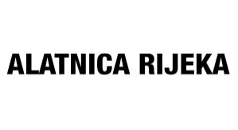

Created a site for company Alatnica Rijeka
I have created webshop site fore Alatnica Rijeka that is selling professional power tools and rents tools for construction.
For this project, I have used WordPress and Woocommerce plugin for implementing webshop capabilities.
Visit Alatnica Rijeka webshop